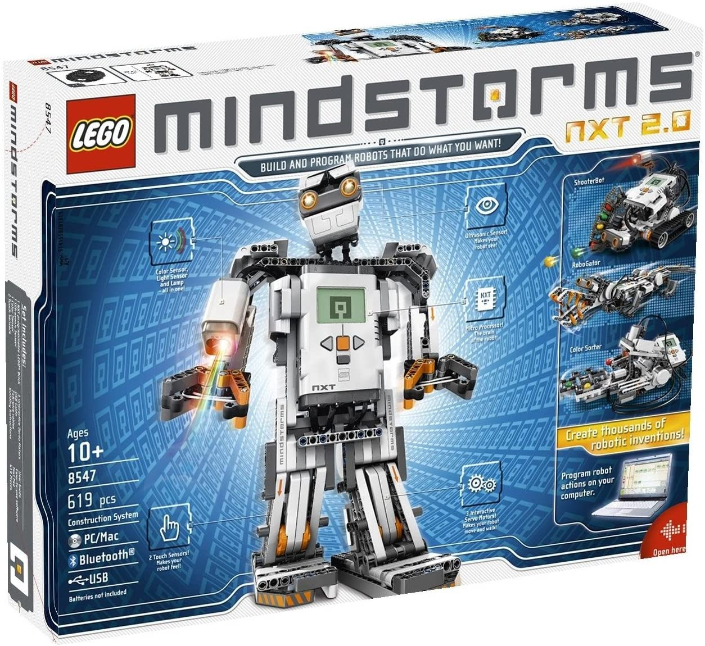
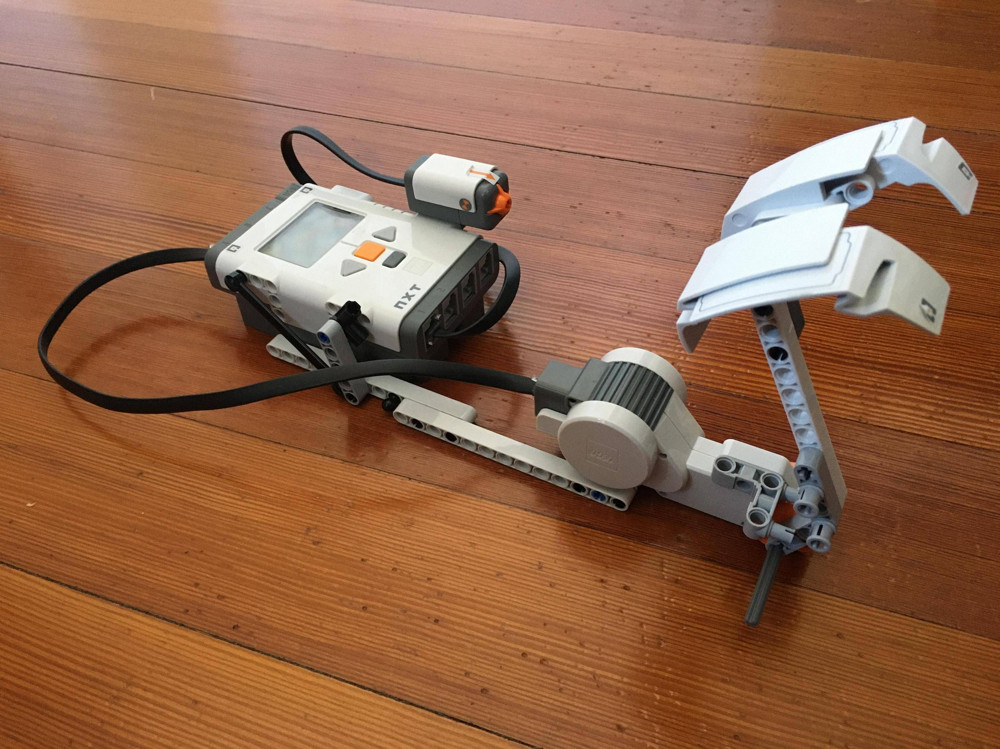

In this blog post, I want to discuss how I made my Lego Mindstorms NXT robotics kit work as a joystick and throttle usable in Microsoft Flight Simulator 2020. I all but directly interface with the NXT and end up learning a lot about Bluetooth and low-level networking, and I learn the SimConnect managed API from a couple google searches and a provided example.
Quick Note:
One of the reasons I wanted to write this blog post was to help other weary developers looking to do similar things, for NXT or for SimConnect/MSFS, and so I would like to add some resources that I found helpful. As I get to different parts of the journey, I will link the resources I use and describe solutions to my problems.
Why?
Microsoft Flight Simulator was in the making for years, and it would be the first groundbreaking improvement to flight simming since I built my pc. I wanted to get in on the simming action, but I knew using a mouse and keyboard to control a plane would be impossibly hard (and definitely no fun). I have an Xbox One controller, and it worked great, except that the throttle was given to the A and B buttons, which made it hard to do precise throttle movements. Using the joystick wasn’t that hard, but it required a super fine touch that took some practice. However, I had an NXT that sat in my basement unused for years, and I wanted to see what I could do with it.
Part 1 - Research and Development
Before going into this, I had to figure out if it was even possible. On the flight sim side, I found that MSFS supported SimConnect, which was an easy way to adjust control surfaces, switches, and other parts of the plane from outside the sim. That would be the best way to interact with the sim, and so I had to plan around that. I found that it required use of C++, but there was also a “managed” C# API. C# was definitely much easier to use for me, coming from a more general programming background, and Microsoft’s ways of doing interfaces, like WPF, used C#.
The harder part was finding how to interface with the NXT. At first, I tried to search for a library that would make the whole process easier. Apparently, there were NXT libraries for practically every language, and it was easy to find a good library for C#. However, nothing was maintained anymore, as the NXT itself was a decade and a half old. The library was named Mindsqualls, and the last update was 2011. Although many people were able to use it fine, I was having a lot of trouble. To make matters worse, I had never used Visual Studio or WPF (one of Microsoft’s UI frameworks), or really even C#, and I couldn’t even compile the examples, as the project files were too old and couldn’t migrate to VS 2019 properly. It was most likely my fault for not being able to use the library, but I ended up going back to the drawing board, which ended up working better anyways.
After about an hour more of searching, I found some old drivers and documentation all the way at the bottom of Lego’s download site. This had some developer kits, which provided solid information about the workings of the NXT. The fantom driver looked the most promising, but it looked complicated and used C++. I was quick to write it off as during my searching I had found a different method. This one didn’t need any dependencies. I had stumbled upon the NXT Communication Protocol documents, and this outlined everything I needed to get started.
The communication protocol was extremely helpful, and for others looking for it, I have uploaded it here (Appendix 1) and here (Appendix 2) and here is another source (without downloads, with extra content). I initially only found the 2nd Appendix, and thankfully that outlined everything I needed to get started with bluetooth. (I didn’t find the second until after I had already gotten everything working.) I was only able to find three documents that had the information relevant: the two appendices, one for direct commands, and one for system commands (and some other helpful fundamental info about the protocol). The third document wasn’t much use, it seemed to be a table of contents for the appendices, and I was only able to find it on a Github repo I stumbled upon.
Part 2 - The NXT
Before beginning on any programming, and only shortly after finding that this was even possible, I built the hardware. The NXT comes with “motors.” These motors aren’t really just motors, but they also have encoders, and they act like a combination of stepper and normal motors, that you can also move manually without breaking. I didn’t know the precision of the motor, so I used some gears to translate a 10 degree motion of the throttle into something much larger on the motor itself. The gear system didn’t work out, as it made the assembly super wobbly and too hard to move the lever. I ended up attaching the lever to the motor directly, giving me a 1:1 ratio of throttle to motor movement. I planned to just make it work first, then adapt if necessary. Spoiler: It was fine. Also, the NXT motor itself had a major problem in how the motor worked, but it would not affect the throttle system’s programming. It was that the motor had a bit of “give” before the motor part of the motor actually started to move. It was also harder to start the motor moving than it was to keep the motor moving, resulting in a bump every time I wanted to move the throttle. This made it hard to get fine movements under 5 degrees of rotation.
Programming wise, it didn’t take long to figure out how to send packets to the device using the SerialPort class. If you are looking to send and receive Bluetooth packets, my NXTThrottle GitHub repo still has the code to send and receive bluetooth packets intact. From the protocol document, I learned how to form the packets and send them, and then what to expect in return. Thankfully, I could just send the packets right after connecting, and I didn’t have to worry about handshakes or anything. I could get the COM port from the Windows Device Manager, which was all I needed to connect. With that out of the way, I wrote up the basic UI and functionality to continuously send motor packets.
The first packet I ever sent was the battery query message, with a response requested. This was formed as { 0x00, 0x0B }. Because it was a bluetooth packet, I also had to add the number of bytes, in the message, which was 2, in Little-Endian order (least significant byte first). This meant the final message to send was { 0x02, 0x00, 0x00, 0x0B }. I sent it off, I got a response, and I was elated.
Knowing I could communicate with the NXT (referencing the communication protocol), I got to work creating the main program. I created a function to automatically generate the length bytes before sending off the packets. I learned threading, and made a thread to continuously poll the motor’s position. To find the values of the throttle, I made a simple calibration sequence of resetting the motor’s position counter to 0 when the throttle was all the way off, and then polling the motor to find the maximum value when the lever was pushed all the way forwards. By getting these values dynamically when running, I could make changes to the hardware without having to change values in code. With the maximum and minimum (0) values, it was quick work to turn that into a 1 - 100 scale that SimConnect required. After some work, I was able to get the throttle to output a continuous stream of throttle values that I could pipe to SimConnect.
Part 3 - SimConnect
SimConnect was arguably harder, but once I got an idea, it went quite swimmingly. Microsoft provided a couple of example programs with their downloadable SDK, and that was a good jumping off point. I was able to get them to compile and run, and one of the examples was an explorer to explore and play around with the different variables and adjust them. From this, I found that there were variables called “General Eng Throttle Lever Position” which, when set, adjusted the position of the throttle levers.
This is the workflow I found (more detail after the snippet):
- I had to make a struct that contained a variable for each of the SimConnect properties I wanted to set. (Part 1 of the snippet)
- Then, I had to map the struct variables to SimConnect variables. The order which I call .AddToDataDefinition(...) is the order that the variables in the struct are used. The mappings are assigned to a value of an enum, DEFINITIONS.PlaneThrottle in this case.
- Finally, when I was ready to set the SimConnect variables, I can create an instance of the struct, and pass it to the function that takes the mappings (assigned to the enum value) and the struct and ships it off to the sim.
Apart from that, there was some other boilerplate code I had to slap in, which I copied and pasted from the examples. (Snippet part 0) This was basically creating/connecting to SimConnect, and adding a function to handle opening and closing of SimConnect, handling SimConnect events (basically doing nothing with them). I tried to make it super easy to understand in my code for easy reference later, and you can find that file here. It took a hell of a long time to understand this, but once it was working it all made sense. I just wish someone wrote these steps out like this.
Part 4 - Testing and Improvements
At this point, the throttle worked as intended. There was the small problem with the motor as described at the start. Also, the first NXT Communication protocol appendix (the one I didn’t find until later), talked about the significant (30ms) delay in switching the bluetooth thingie from sending to receiving or vice versa. I could really feel this in the usage of the throttle, because there would have to be a 60ms delay, on top of a slight extra delay from my code, before updates would happen. This meant that I had to convert to using USB if I wanted faster speeds, especially for something like a joystick.
The bottom line was that it worked, and I was happy about that. It was definitely nicer using my throttle than the A and B buttons on the Xbox controller. I cleaned it up, put it on Github, and called it a day. A couple months later, however, I was researching the USB protocols, and I found a promising method for communicating over USB…
Thank you for reading! I hope that you have either found this post helpful or entertaining. You can leave questions, comments, or just say hi at this thread.